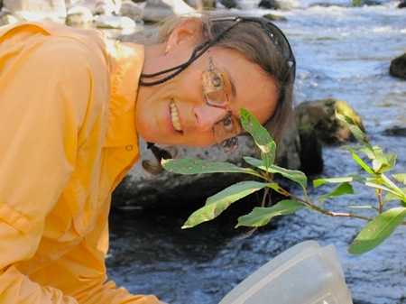
Jutta Schmidt-Gengenbach, MS, Staff Research
Associate, deserves special mention. She has been a lab manager,
taxonomist, field team member, and colleague for many years, and has
been an integral part of all of our research activities.
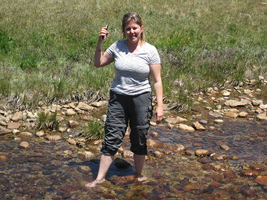
Caara Hunter in a mid-season stream in Yosemite
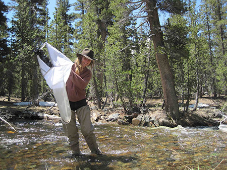
Sophie Winitsky lassoes a herd of invertebrates
in Yosemite National Park
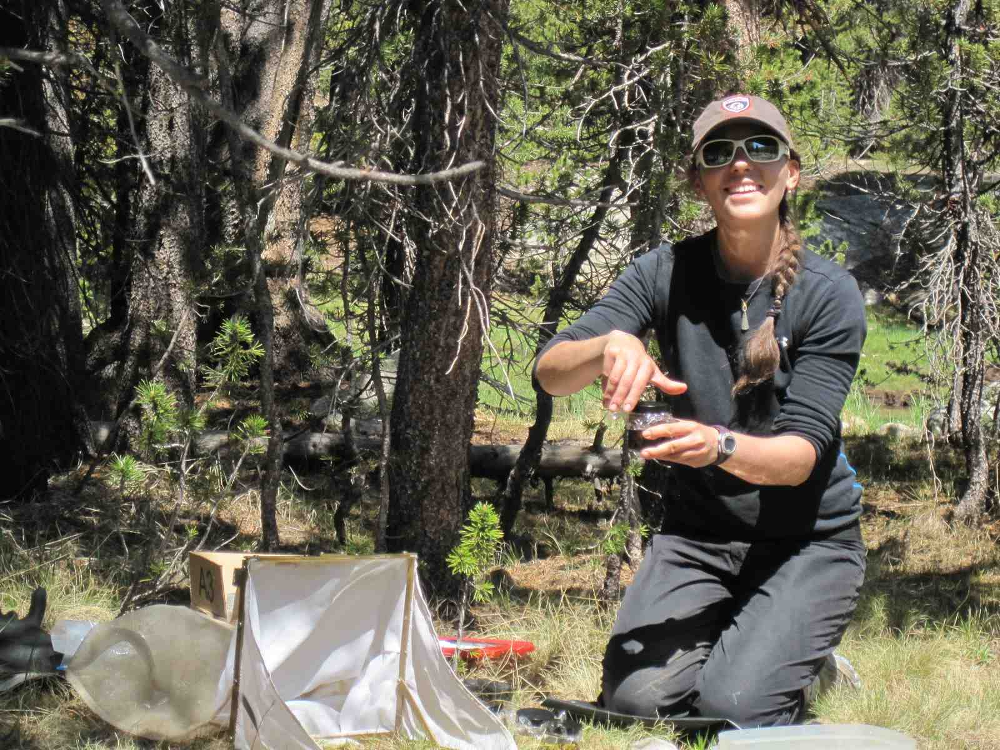
Marie Pavlovsky collecting a Surber sample from a stream
in Yosemite National Park (J Schmidt-Gengenbach photo)
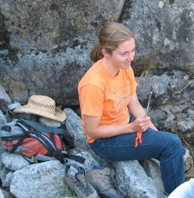
Chelsea Clifford brandishes a thermometer by the
Tuolumne River, below the Hetch Hetchy Reservoir, in Yosemite
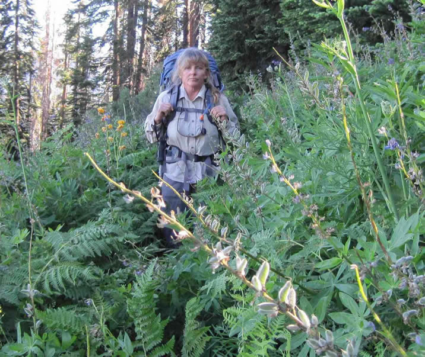
Carole Schilz hikes through a resplendent meadow in
Sequoia National Park en route to a sampling site in another
resplendent meadow (Jutta Schmidt-Gengenbach photo)
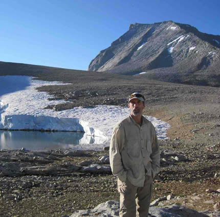
Steve Case takes a break at the top of a pass in
Sequoia National Park (Jutta Schmidt-Gengenbach photo)
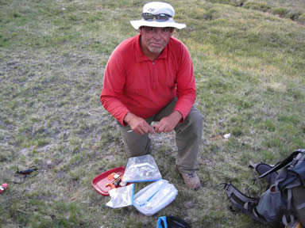
Rick Dodson evaluates effects of mule and
horse grazing in Sequoia National Park (Jutta Schmidt-Gengenbach
photo)
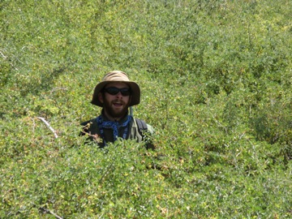
Are we there yet? Jason Love works his way through
dense brush en route to a Yosemite sampling site (J Jones photo)
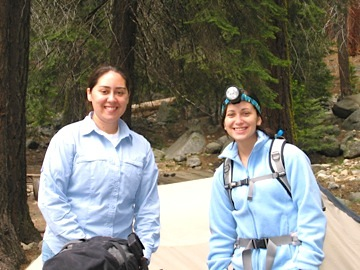
Adianez Santiago (left) and Natasha Acevedo, NSF Research Experiences for Undergraduates students, get ready
for an early morning wetland sample near the Giant Forest in
Sequoia National Park
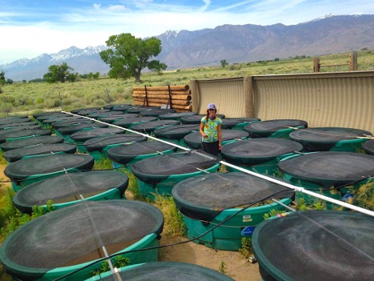
Christi Kruse surveying her domain at White Mountain Research Station: a large array of cattle tanks that she used to experimentally assess competition between two desert fishes
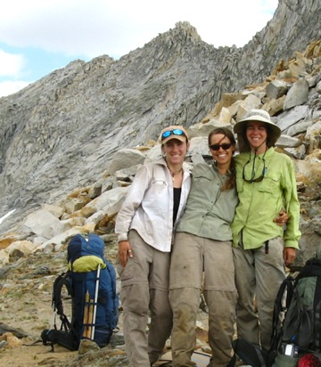
Lyra Pierotti (left) Jennifer Jones (middle), and
Georgia Doyle at a high mountain pass in Sequoia National Park
on their way to sample a subalpine wetland (J Jones photo)
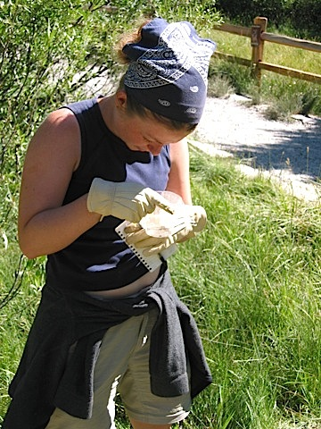
Kim Ogden inspects a pitfall trap for marked beetles
in Devils Postpile National Monument as part of her project that
examines effects of trails on invertebrate movements
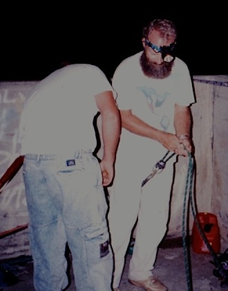
Austin Bowden-Kerby (right) and Burton Shank get ready
to belay a crew member onto a dam face as part of a study of
shrimp migration in Puerto Rico
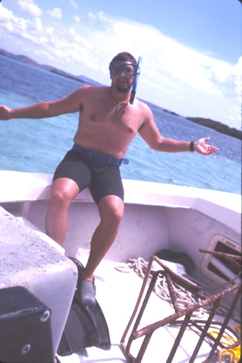
Burton Shank indicating that he is not intimidated by
the bucktooth parrotfish, the subject of his study of the role
of refuge configuration in determining foraging patterns
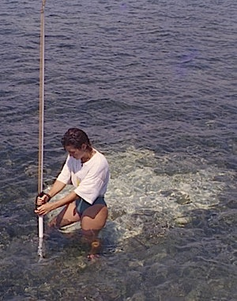
Caren Eckrich assesses substrate compaction in an
effort to determine the effects of human trampling in seagrass
meadows in Puerto Rico (B Shank photo)
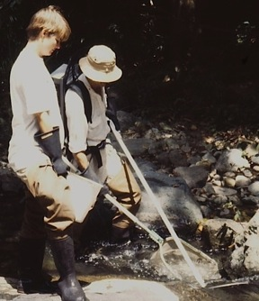
Laura Somervill Ocker helps me capture freshwater
shrimps and fishes in a study of amphidromous migration in
Puerto Rico (J Schmidt-Gengenbach photo)